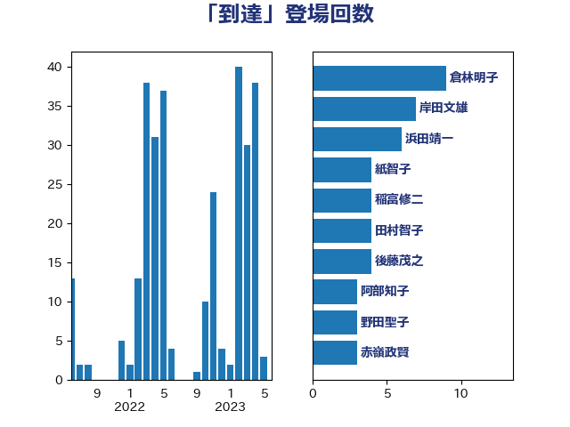

単語「到達」

| 倉林明子 | 日本共産党 | 9 回 |
| 岸田文雄 | 自由民主党 | 7 回 |
| 浜田靖一 | 自由民主党 | 6 回 |
| 紙智子 | 日本共産党 | 4 回 |
| 稲富修二 | 立憲民主党 | 4 回 |
| 田村智子 | 日本共産党 | 4 回 |
| 後藤茂之 | 自由民主党 | 4 回 |
| 阿部知子 | 立憲民主党 | 3 回 |
| 野田聖子 | 自由民主党 | 3 回 |
| 赤嶺政賢 | 日本共産党 | 3 回 |
| 田村貴昭 | 日本共産党 | 3 回 |
| 田村まみ | 国民民主党 | 3 回 |
| 斉藤鉄夫 | 公明党 | 3 回 |
| 加藤勝信 | 自由民主党 | 3 回 |
| 阿部弘樹 | 日本維新の会 | 2 回 |
| 西野太亮 | 自由民主党 | 2 回 |
| 西村康稔 | 自由民主党 | 2 回 |
| 西岡秀子 | 国民民主党 | 2 回 |
| 米山隆一 | 立憲民主党 | 2 回 |
| 礒崎哲史 | 国民民主党 | 2 回 |
| 石井章 | 日本維新の会 | 2 回 |
| 田中健 | 国民民主党 | 2 回 |
| 松本剛明 | 自由民主党 | 2 回 |
| 本庄知史 | 立憲民主党 | 2 回 |
| 岸真紀子 | 立憲民主党 | 2 回 |
| 山田勝彦 | 立憲民主党 | 2 回 |
| 山岸一生 | 立憲民主党 | 2 回 |
| 小沢雅仁 | 立憲民主党 | 2 回 |
| 室井邦彦 | 日本維新の会 | 2 回 |
| 吉良よし子 | 日本共産党 | 2 回 |
| 吉田豊史 | 無所属 | 2 回 |
| 吉田宣弘 | 公明党 | 2 回 |
| 前原誠司 | 国民民主党 | 2 回 |
| 住吉寛紀 | 日本維新の会 | 2 回 |
| 伊波洋一 | 無所属 | 2 回 |
| 仁比聡平 | 日本共産党 | 2 回 |
| 井野俊郎 | 自由民主党 | 2 回 |
| 中島克仁 | 立憲民主党 | 2 回 |
| こやり隆史 | 自由民主党 | 2 回 |
| おおつき紅葉 | 立憲民主党 | 2 回 |
| 高橋光男 | 公明党 | 1 回 |
| 高木真理 | 立憲民主党 | 1 回 |
| 青島健太 | 日本維新の会 | 1 回 |
| 青山繁晴 | 自由民主党 | 1 回 |
| 鈴木貴子 | 自由民主党 | 1 回 |
| 鈴木義弘 | 国民民主党 | 1 回 |
| 鈴木俊一 | 自由民主党 | 1 回 |
| 金子俊平 | 自由民主党 | 1 回 |
| 野田国義 | 立憲民主党 | 1 回 |
| 野田佳彦 | 立憲民主党 | 1 回 |
| 野村哲郎 | 自由民主党 | 1 回 |
| 野中厚 | 自由民主党 | 1 回 |
| 重徳和彦 | 立憲民主党 | 1 回 |
| 輿水恵一 | 公明党 | 1 回 |
| 足立康史 | 日本維新の会 | 1 回 |
| 藤巻健太 | 日本維新の会 | 1 回 |
| 葉梨康弘 | 自由民主党 | 1 回 |
| 萩生田光一 | 自由民主党 | 1 回 |
| 舩後靖彦 | れいわ新選組 | 1 回 |
| 緒方林太郎 | 無所属 | 1 回 |
| 緑川貴士 | 立憲民主党 | 1 回 |
| 篠原孝 | 立憲民主党 | 1 回 |
| 窪田哲也 | 公明党 | 1 回 |
| 空本誠喜 | 日本維新の会 | 1 回 |
| 穀田恵二 | 日本共産党 | 1 回 |
| 稲津久 | 公明党 | 1 回 |
| 福田昭夫 | 立憲民主党 | 1 回 |
| 福島伸享 | 無所属 | 1 回 |
| 石川昭政 | 自由民主党 | 1 回 |
| 石井苗子 | 日本維新の会 | 1 回 |
| 盛山正仁 | 自由民主党 | 1 回 |
| 田島麻衣子 | 立憲民主党 | 1 回 |
| 牧義夫 | 立憲民主党 | 1 回 |
| 牧山ひろえ | 立憲民主党 | 1 回 |
| 片山さつき | 自由民主党 | 1 回 |
| 渡辺周 | 立憲民主党 | 1 回 |
| 浜野喜史 | 国民民主党 | 1 回 |
| 浜地雅一 | 公明党 | 1 回 |
| 浅野哲 | 国民民主党 | 1 回 |
| 泉健太 | 立憲民主党 | 1 回 |
| 河西宏一 | 公明党 | 1 回 |
| 沢田良 | 日本維新の会 | 1 回 |
| 池畑浩太朗 | 日本維新の会 | 1 回 |
| 江藤拓 | 自由民主党 | 1 回 |
| 比嘉奈津美 | 自由民主党 | 1 回 |
| 森田俊和 | 立憲民主党 | 1 回 |
| 森屋隆 | 立憲民主党 | 1 回 |
| 梶原大介 | 自由民主党 | 1 回 |
| 柴田巧 | 日本維新の会 | 1 回 |
| 林芳正 | 自由民主党 | 1 回 |
| 松野博一 | 自由民主党 | 1 回 |
| 杉田水脈 | 自由民主党 | 1 回 |
| 掘井健智 | 日本維新の会 | 1 回 |
| 工藤彰三 | 自由民主党 | 1 回 |
| 川合孝典 | 国民民主党 | 1 回 |
| 山添拓 | 日本共産党 | 1 回 |
| 山下芳生 | 日本共産党 | 1 回 |
| 小野田紀美 | 自由民主党 | 1 回 |
| 宮本徹 | 日本共産党 | 1 回 |
| 宮崎雅夫 | 自由民主党 | 1 回 |
| 宮崎勝 | 公明党 | 1 回 |
| 大串博志 | 立憲民主党 | 1 回 |
| 塩田博昭 | 公明党 | 1 回 |
| 堀場幸子 | 日本維新の会 | 1 回 |
| 堀井巌 | 自由民主党 | 1 回 |
| 和田有一朗 | 日本維新の会 | 1 回 |
| 吉良州司 | 無所属 | 1 回 |
| 古川禎久 | 自由民主党 | 1 回 |
| 北神圭朗 | 無所属 | 1 回 |
| 勝俣孝明 | 自由民主党 | 1 回 |
| 中川郁子 | 自由民主党 | 1 回 |
| 一谷勇一郎 | 日本維新の会 | 1 回 |